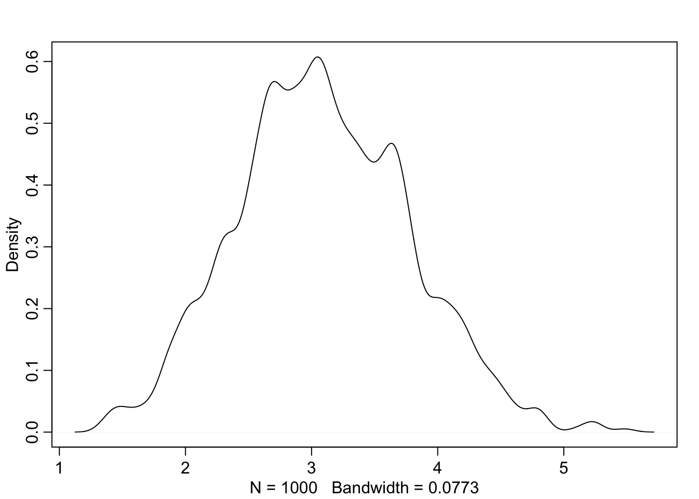

9.2 Metropolis algorithm
The population size is the posterior probability. This works no matter how many parameters you have, in the long run. The long run is really long if you have a lot of parameters. That’s the snag.
9.2.1. Gibbs sampling
Why would we want an algorithm that allows asymmetric proposals? One reason is that it makes it easier to handle parameters, like standard deviations, that have boundaries at zero. A better reason, however, is that it allows us to generate savvy proposals that explore the posterior distribution more efficiently. By “more efficiently,” I mean that we can acquire an equally good image of the posterior distribution in fewer steps. The most common way to generate savvy proposals is a technique known as GIBBS SAMPLING.
9.2.2. High-dimensional problems
D <- 10
T <- 1e3
Y <- rmvnorm(T,rep(0,D),diag(D))
rad_dist <- function( Y ) sqrt( sum(Y^2) )
Rd <- sapply( 1:T , function(i) rad_dist( Y[i,] ) )
dens( Rd )
Here’s the famous paper where they first implemented it. Some famous people here. Rosenbluth did most of the programming, and Teller figured out the memory. The fed the tape in with a bicycle wheel. This was all part of the Manhattan project - for making fusion bombs post-war.

Metropolis in the foreground. MANIAC in the background. Currently a laptop can do billions of multiplications per second.

What are Markov Chains? The Metropolis is the simplest verison. Named after Markov. What makes something a Markov chain only depends on where you are now, not where you’ve been. What matters is the current state. Great for computing because you don’t need to store a bunch of numbers.
![Sometimes you get a model that is to hard to integrate. Often with integrals you're guessing. Not like derivatives. Going in the other direction is much harder. Integrating is sometimes not practical. MCMC is just one of the methods of estimating it. Optimisation (like quap) often targets the wrong area of the distribution ('concentration of measure'). This is why everyone gives up on optimisation once you have more than 100 parameters. This is bread and butter sort of stuff in applied statistics.](slides/L10/25.png)
Sometimes you get a model that is to hard to integrate. Often with integrals you’re guessing. Not like derivatives. Going in the other direction is much harder. Integrating is sometimes not practical. MCMC is just one of the methods of estimating it. Optimisation (like quap) often targets the wrong area of the distribution (‘concentration of measure’). This is why everyone gives up on optimisation once you have more than 100 parameters. This is bread and butter sort of stuff in applied statistics.
![There are a bunch of different MCMC strategies. Hastings showed that you don't need symmetric proposals, which made them more efficient. Gibbs sampling is extremely efficient, but basically Metropolis. What they have in common is they guess and check. They make a proposal to move somewhere, check the posterior probability at that location, then decide to move. If you make dumb proposals, you won't move. The goal is to constantly move by making really smart proposals. Guess and checking gives you dumb proposals, so you need a completely different strategy: Hamiltonian. Really efficient and can make models with tens of thousands of parameters. Hamiltonians use a gradient.](slides/L10/26.png)
There are a bunch of different MCMC strategies. Hastings showed that you don’t need symmetric proposals, which made them more efficient. Gibbs sampling is extremely efficient, but basically Metropolis. What they have in common is they guess and check. They make a proposal to move somewhere, check the posterior probability at that location, then decide to move. If you make dumb proposals, you won’t move. The goal is to constantly move by making really smart proposals. Guess and checking gives you dumb proposals, so you need a completely different strategy: Hamiltonian. Really efficient and can make models with tens of thousands of parameters. Hamiltonians use a gradient.

Simulation of the MC run. Red it stays, green is moves. It stacks the distribution as it moves. Metropolis works really well. The problem comes when the distribution is not as nice as a Gaussian hill.

… like a donut. In high-dimensional spaces, it gets concentrated into thin shells. Picture a hyper-donut. We must sample from it. And the Metropolialogrithm is really bad like that, because it makes a lot of proposals into dead space. You can see it’s a donut, but it doesn’t. Now the long run is very long indeed. It gets stuck in narrow regions. The basic problem is that the proposals don’t know the shape of the distribution.
As models become more complex and contain hundreds or thousands or tens of thousands of parameters, both Metropolis and Gibbs sampling become shockingly inefficient. The reason is that they tend to get stuck in small regions of the posterior for potentially a long time. The high number of parameters isn’t the problem so much as the fact that models with many parameters nearly always have regions of high correlation in the posterior. This means that two or more parameters are highly correlated with one another in the posterior samples. You’ve seen this before with, for example, the two legs example in Chapter 6. Why is this a problem? Because high correlation means a narrow ridge of high probability combinations, and both Metropolis and Gibbs make too many dumb proposals of where to go next. So they get stuck.

You can tune it, but there’s a really tight trade-off. On the left we start with the Markov chain. Filled circles are accepted. If you only consider points near you, you’ll get more valid proposals, but you’ll move really slow. If we lengthen, then we reject more. This is the fundamental trade-off. Really you can’t win. Gibbs can do a little better. Butas soon as the dimensions increase, the problem eventually appears. The issue is guess and check.